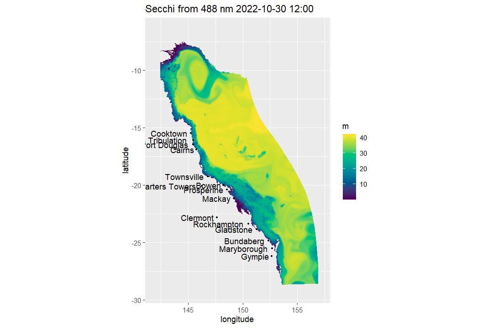
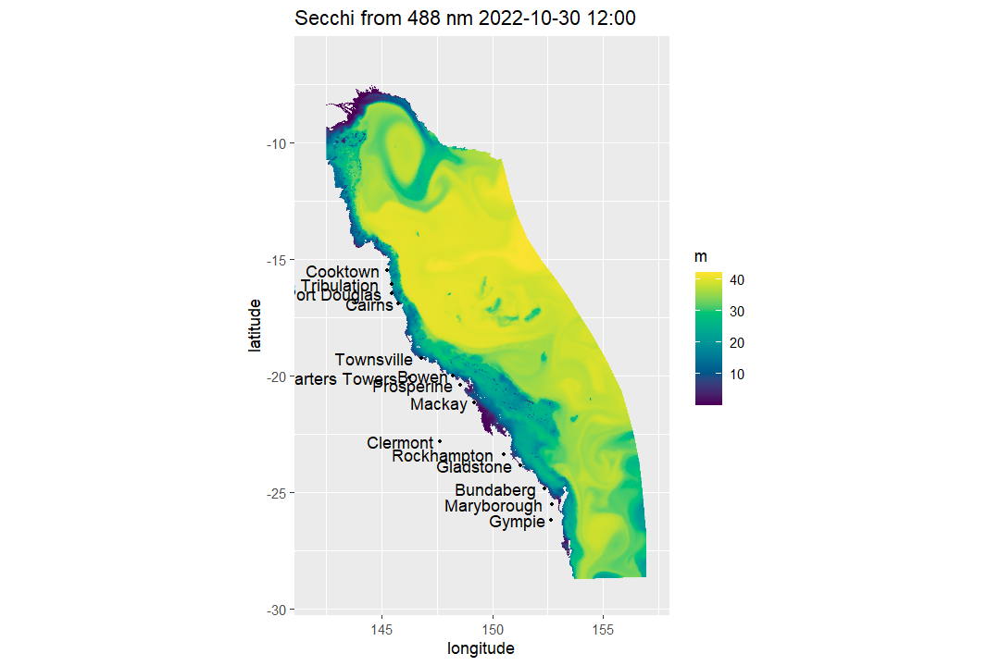
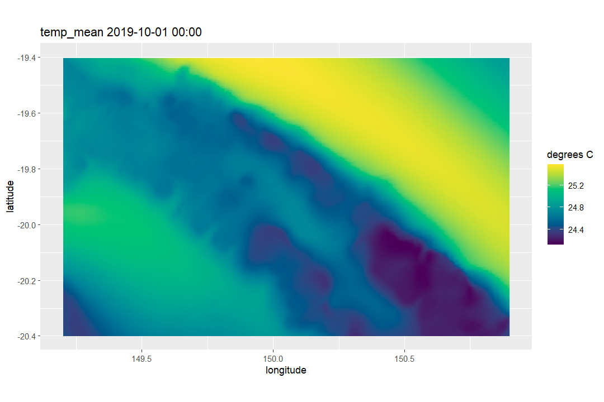
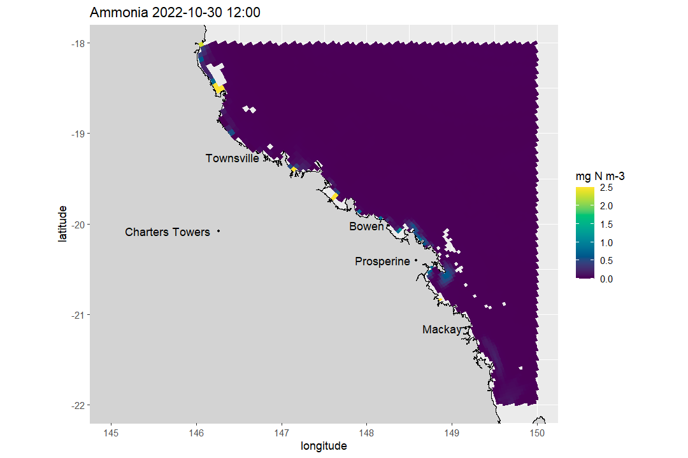
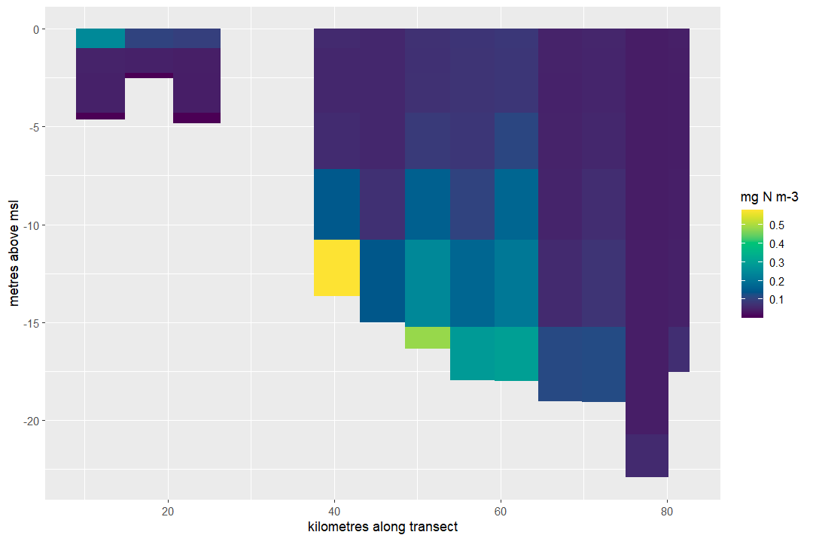
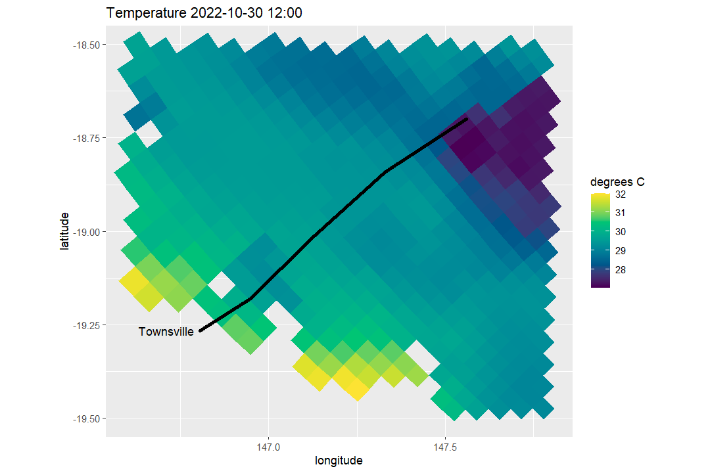
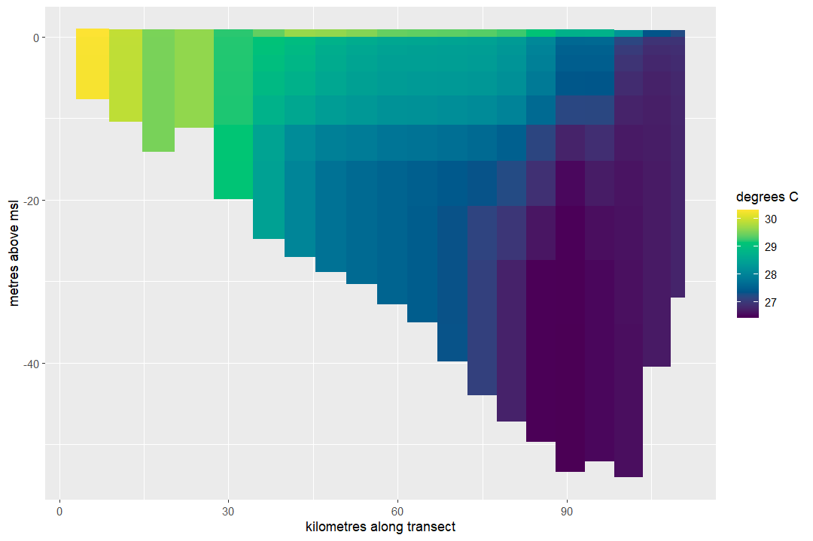
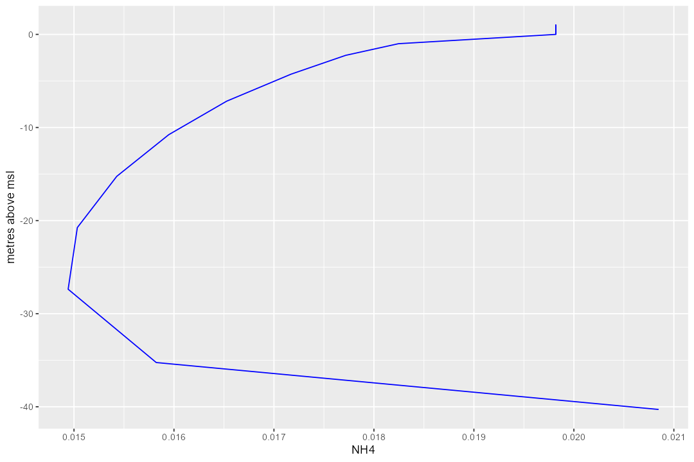
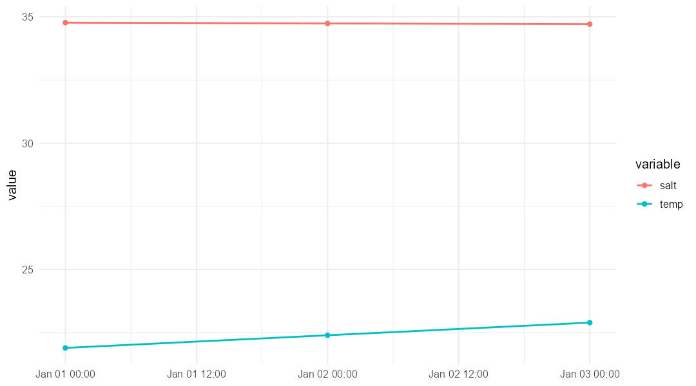
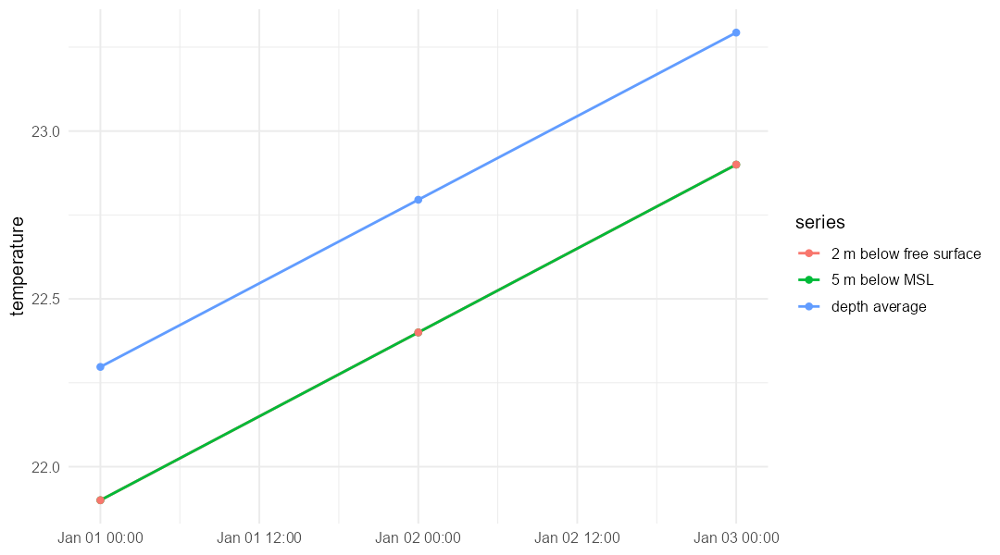

howto.RmdThis guideline provides a series of practical examples on how a user
might take advantage of the functionalities offered by
ereefs. But first we need to load ereefs — if
you have not done so yet, please see our README page for
installation instructions:
The current package supports both curvilinear EMS files that provide
cell corners and regular regridded files that only provide cell centres.
The plotting functions detect the available geometry and reconstruct map
polygons from centre coordinates when needed. For scalar variables, the
default colour palette is now viridis.
One can create a map of a scalar field such as Secchi depth from a live NCI simple-format file:
map_ereefs(
var_name = "Secchi", target_date = as.Date("2022-10-30"),
input_file = "https://thredds.nci.org.au/thredds/dodsC/fx3/gbr4_H4p0_ABARRAr2_OBRAN2020_FG2Gv3_B4p2_Cq5b_Dhnd/gbr4_H4p0_ABARRAr2_OBRAN2020_FG2G_B4p2_Cq5b_Dhnd_simple_2022-10-30.nc"
)
If you would prefer a smoother-looking presentation figure,
map_ereefs() can optionally rasterise the polygons to a
regular display grid and interpolate between the display pixels. This
only affects how the map is drawn; it does not change the extracted
values:
map_ereefs(
var_name = "Secchi", target_date = as.Date("2022-10-30"),
input_file = "https://thredds.nci.org.au/thredds/dodsC/fx3/gbr4_H4p0_ABARRAr2_OBRAN2020_FG2Gv3_B4p2_Cq5b_Dhnd/gbr4_H4p0_ABARRAr2_OBRAN2020_FG2G_B4p2_Cq5b_Dhnd_simple_2022-10-30.nc",
plot_style = "smooth",
smooth_pixels = 900
)
The same plotting path also works on regular-grid products that only provide cell centres. For example, here is a monthly mean surface temperature map from the AIMS regular-grid THREDDS catalog:
map_ereefs(
var_name = "temp_mean", target_date = as.Date("2019-10-01"),
input_file = "https://thredds.ereefs.aims.gov.au/thredds/catalog/ereefs/gbr1_2.0/stats-monthly-monthly/catalog.xml",
box_bounds = c(149.2, 150.9, -20.4, -19.4)
)The colour scale and display style can still be customised explicitly:
map_ereefs(
var_name = "temp_mean", target_date = as.Date("2019-10-01"),
input_file = "https://thredds.ereefs.aims.gov.au/thredds/catalog/ereefs/gbr1_2.0/stats-monthly-monthly/catalog.xml",
box_bounds = c(149.2, 150.9, -20.4, -19.4),
scale_lim = c(24, 27), plot_style = "smooth", smooth_pixels = 700
)
We can also plot different variables such as ammonium at a particular depth (e.g., 5 m below MSL; default is at the surface), add a land map to the plot, and focus on a particular region:
map_ereefs(
var_name = "NH4", target_date = as.Date("2022-10-30"),
layer = -5,
input_file = "https://thredds.nci.org.au/thredds/dodsC/fx3/gbr4_H4p0_ABARRAr2_OBRAN2020_FG2Gv3_B4p2_Cq5b_Dhnd/gbr4_H4p0_ABARRAr2_OBRAN2020_FG2G_B4p2_Cq5b_Dhnd_simple_2022-10-30.nc",
Land_map = TRUE, box_bounds = c(145, 150, -22, -18), scale_lim = c(0, 10)
)
We can also create the image files needed for a true colour animation
of surface salinity in this area. map_ereefs_movie() now
saves the individual frame images and can also assemble them into a GIF
or MP4 directly. Numeric variables use one shared colour scale across
all frames by default, so the colours remain comparable from one
time-step to the next. Below, salt_list is a list that
includes the plot handle as well as the temporal mean salinity for each
point in the map over the period of the animation, plus the cell centre
geo-locations (choose menu option 9). By default, images are saved to
the directory "ToAnimate", but can be changed via the
argument output_dir (NB: the code below is not
run):
# code not run
map_ereefs_movie(
var_name = "salt", start_date = c(2019, 2, 15), end_date = c(2019, 3, 10),
Land_map = TRUE, box_bounds = c(145, 150, -22, -18), scale_col = "viridis",
scale_lim = c(30, 35), animation_format = "gif"
)The code example below extracts the data from a vertical slice of
ammonium along a short transect extending about 60 km offshore from
Townsville using live OPeNDAP data from the NCI simple file. A slice can
also be defined along a long, curvy line, for example a boat track, by
passing a multi-row data frame of latitude and longitude points to
geolocation in get_ereefs_slice(). One can
also get data from multiple variables by making var_names a
vector (e.g., var_names = c("temp", "salt")).
temp_slice <- get_ereefs_slice(
var_names = "NH4",
target_date = as.POSIXct("2022-10-30 12:00:00", tz = "Etc/GMT-10"),
geolocation = data.frame(latitude = c(-19.26639219, -19.26639219), longitude = c(146.805701, 147.38)),
input_file = "https://thredds.nci.org.au/thredds/dodsC/fx3/gbr4_H4p0_ABARRAr2_OBRAN2020_FG2Gv3_B4p2_Cq5b_Dhnd/gbr4_H4p0_ABARRAr2_OBRAN2020_FG2G_B4p2_Cq5b_Dhnd_simple_2022-10-30.nc"
)Now visualise the results:
plot_ereefs_slice(temp_slice, var_name = "NH4", scale_col = "viridis", var_units = "mg N m-3")
The same multi-point geolocation interface can be used
to define a curved or zig-zag transect. Here is a live OPeNDAP example
using hydrodynamic temperature data from an arc-shaped transect that
bends north-east away from Townsville:
arc_transect <- data.frame(
latitude = c(-19.26639219, -19.18, -19.02, -18.84, -18.70),
longitude = c(146.805701, 146.95, 147.12, 147.33, 147.56)
)
arc_slice <- get_ereefs_slice(
var_names = "temp",
target_date = as.POSIXct("2022-10-30 12:00:00", tz = "Etc/GMT-10"),
geolocation = arc_transect,
input_file = "https://thredds.nci.org.au/thredds/dodsC/fx3/gbr4_H4p0_ABARRAr2_OBRAN2020_FG2Gv3_Dhnd/gbr4_simple_2022-10-30.nc"
)We can map the surface temperature field from the same dataset, then overlay the curved transect path:
library(ggplot2)
arc_map <- map_ereefs(
var_name = "temp",
target_date = as.POSIXct("2022-10-30 12:00:00", tz = "Etc/GMT-10"),
layer = "surface",
input_file = "https://thredds.nci.org.au/thredds/dodsC/fx3/gbr4_H4p0_ABARRAr2_OBRAN2020_FG2Gv3_Dhnd/gbr4_simple_2022-10-30.nc",
box_bounds = c(146.6, 147.8, -19.5, -18.5),
suppress_print = TRUE
) +
geom_path(
data = arc_transect,
aes(x = longitude, y = latitude),
inherit.aes = FALSE,
colour = "black",
linewidth = 1.6,
lineend = "round"
)
arc_map
Then we can visualise the corresponding vertical slice:
plot_ereefs_slice(
arc_slice,
var_name = "temp",
scale_col = "viridis",
var_units = "degrees C"
)
We can also extract a vertical profile (rather than a slice) at a single location and time from the same live OPeNDAP file:
profile_data <- get_ereefs_profile(
var_names = "NH4",
start_date = as.POSIXct("2022-10-30 12:00:00", tz = "Etc/GMT-10"),
end_date = as.POSIXct("2022-10-30 12:00:00", tz = "Etc/GMT-10"),
geolocation = c(-19.5, 148.0),
input_file = "https://thredds.nci.org.au/thredds/dodsC/fx3/gbr4_H4p0_ABARRAr2_OBRAN2020_FG2Gv3_B4p2_Cq5b_Dhnd/gbr4_H4p0_ABARRAr2_OBRAN2020_FG2G_B4p2_Cq5b_Dhnd_simple_2022-10-30.nc"
)Now visualise the results:
plot_ereefs_profile(
profile_data, var_name = "NH4", target_date = as.POSIXct("2022-10-30 12:00:00", tz = "Etc/GMT-10")
)
get_ereefs_profile() now favours robustness over
low-level NetCDF slicing, which makes it slower for long requests but
much less brittle for OPeNDAP-served data.
We can also extract a time-series of surface data at a single or multiple specified locations (choose menu option 11):
tsdata <- get_ereefs_ts(
var_names = c("temp", "salt"),
start_date = as.POSIXct("2020-01-01 00:00:00", tz = "Etc/GMT-10"),
end_date = as.POSIXct("2020-01-03 00:00:00", tz = "Etc/GMT-10"),
geocoordinates = data.frame(latitude = -19.75, longitude = 146.75),
input_file = "notebooks/demo_data/regular_demo_2020-01.nc"
)For example, we can quickly plot the extracted surface temperature and salinity time-series:
library(ggplot2)
ggplot(tsdata, aes(x = time)) +
geom_line(aes(y = temp, colour = "temp")) +
geom_point(aes(y = temp, colour = "temp")) +
geom_line(aes(y = salt, colour = "salt")) +
geom_point(aes(y = salt, colour = "salt")) +
labs(x = NULL, y = "value", colour = "variable")
When input_file is a THREDDS catalog rather than a
single NetCDF file, the package now works out which files are needed to
cover the requested period. If the requested period extends beyond what
is currently present in that catalog, the available part is returned
with a warning.
The locations could even be at all the Marine Monitoring Program routine water quality sampling locations:
mmpdata <- get_ereefs_ts(
var_names = c("salt", "TN"), geocoordinates = "mmp",
start_date = c(2018, 1, 1), end_date = c(2018, 2, 28)
)The time-series can also be extract at a specified depth of 5 m below MSL:
deeperdata <- get_ereefs_ts(
var_names = "temp", geocoordinates = c(-19.75, 146.75),
start_date = as.POSIXct("2020-01-01 00:00:00", tz = "Etc/GMT-10"),
end_date = as.POSIXct("2020-01-03 00:00:00", tz = "Etc/GMT-10"),
layer = -5,
input_file = "notebooks/demo_data/regular_demo_2020-01.nc"
)For depth-resolved variables, layer = "surface" now
refers to the shallowest wet model layer at each output time, while
layer = "bottom" refers to the deepest wet layer. This is
more robust in tidally shallow cells where the largest k
index can occasionally be dry.
One could also have set the argument layer = "bottom" to
extract a time-series of data at the bottom of the water column.
However, to extract a time-series of data averaged over the depth of the
water column, the user woul use the function
get_ereefs_depth_integrated_ts:
intdata <- get_ereefs_depth_integrated_ts(
var_names = "temp", geocoordinates = c(-19.75, 146.75),
start_date = as.POSIXct("2020-01-01 00:00:00", tz = "Etc/GMT-10"),
end_date = as.POSIXct("2020-01-03 00:00:00", tz = "Etc/GMT-10"),
input_file = "notebooks/demo_data/regular_demo_2020-01.nc"
)Other options include extracting a time-series of the mass per square metre of a variable, integrated over the depth of the water column:
intdatapermass <- get_ereefs_depth_integrated_ts(
var_names = "temp", geocoordinates = c(-19.75, 146.75),
start_date = as.POSIXct("2020-01-01 00:00:00", tz = "Etc/GMT-10"),
end_date = as.POSIXct("2020-01-03 00:00:00", tz = "Etc/GMT-10"),
input_file = "notebooks/demo_data/regular_demo_2020-01.nc", mass = TRUE
)or extracting a time-series of data at a specified depth below the tidal free surface (rather than below MSL):
tidalintdata <- get_ereefs_depth_specified_ts(
var_names = "temp", geocoordinates = c(-19.75, 146.75),
start_date = as.POSIXct("2020-01-01 00:00:00", tz = "Etc/GMT-10"),
end_date = as.POSIXct("2020-01-03 00:00:00", tz = "Etc/GMT-10"),
input_file = "notebooks/demo_data/regular_demo_2020-01.nc", depth = 2.0
)Those depth-aware series can also be compared visually:
depth_plot_data <- rbind(
data.frame(time = deeperdata$time, value = deeperdata$temp, series = "5 m below MSL"),
data.frame(time = intdata$time, value = intdata$temp, series = "depth average"),
data.frame(time = tidalintdata$time, value = tidalintdata$temp, series = "2 m below free surface")
)
ggplot(depth_plot_data, aes(x = time, y = value, colour = series)) +
geom_line() +
geom_point() +
labs(x = NULL, y = "temperature")
If eta is not available in a selected simple-format
file, get_ereefs_depth_specified_ts() now warns and assumes
eta = 0 instead of stopping. That keeps centre-only simple
files usable while making the approximation explicit.
If z_grid is absent but zc is present in a
simple-format file, the package now reconstructs layer interfaces from
zc using midpoint assumptions and resets the top interface
to 1e20 to match the standard EMS convention.
If a single requested timestamp does not exactly match a model output time, the package now falls back to the nearest available time and warns so the substitution is explicit.